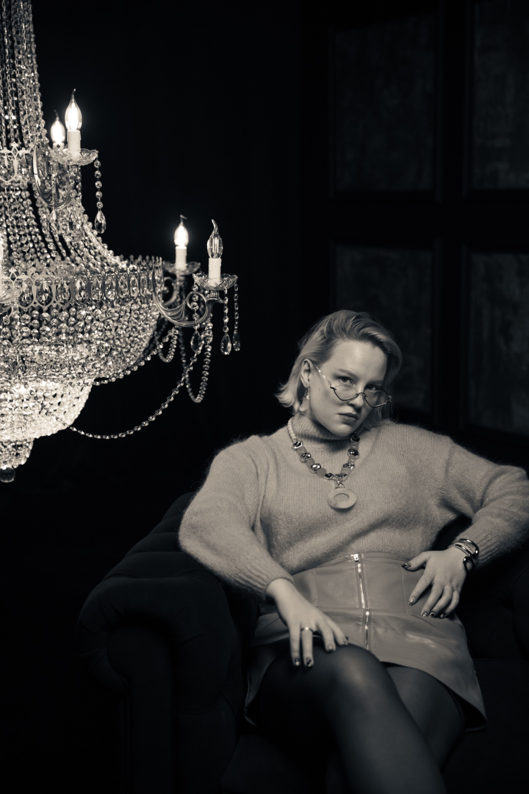

Обо мне

Больше всего я люблю создавать визуальные миры.
Придумаю и разработаю тот самый неосязаемый, но важный слой спектакля, концерта или события — его визуальный образ. Работаю на стыке творчества и технологии: от покадровой анимации, съёмки и нейросетей до подбора и настройки технического оборудования.
Мне важно не просто сделать красивую картинку, а создать визуальный язык, который становится частью пространства, драматургии и атмосферы проекта.
Образование
2018–2022
Театральный художественно-технический колледж
Техника и технологии аудиовизуальных программ
Техника и технологии аудиовизуальных программ
2022–2027
Гуманитарный институт телевидения и радио
Режиссура телевидения
Режиссура телевидения
Место работы
с 2021
Театр Наций
Цех проекционных технологий · видеоинженер
Цех проекционных технологий · видеоинженер